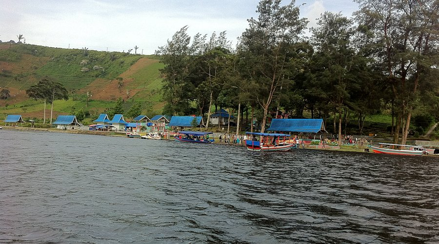

Danau Mas Harun Bestari
ChatGPT bilang: Danau Mas Harun Bestari adalah objek wisata alam yang terletak di Desa Karang Jaya, Kecamatan Selupu Rejang, Kabupaten Rejang Lebong, Bengkulu, sekitar 95 km dari Kota Bengkulu dan 19 km dari Curup. Danau seluas 75 hektare ini dikelilingi bukit hijau yang asri dan memiliki sebuah pulau kecil unik berbentuk huruf "C" yang dipercaya merepresentasikan inisial "Curup". Pengunjung dapat menikmati berbagai aktivitas seperti berperahu motor, naik kano, sepeda air, memancing, hingga mencoba wahana flying fox dan permainan anak, dengan tiket masuk yang sangat terjangkau. Fasilitas yang tersedia pun cukup lengkap, mulai dari toilet, warung makan, kafe, villa, homestay, hingga aula pertemuan dan area bermain anak. Keindahan alamnya yang sejuk dan damai, ditambah kenyamanan fasilitas, menjadikan Danau Mas Harun Bestari destinasi wisata keluarga yang ideal dan menarik untuk dikunjungi saat liburan.
Kembali